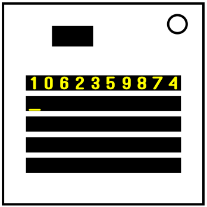

モジュール詳細：MWIソート
宇宙を破壊できる技術を手に入れれば、世界のすべてを達成できるだろう…全ての宇宙を破壊するまでは。
モジュールには5つの長いディスプレーがあり、上から下に0~4の番号が付けられている。ディスプレー0には重複しない10桁の数字が表示されている。最後のディスプレーで記録された全ての数字が正しく並び替えられていればモジュールが解除される。任意の数字を押すとカーソルが現在ある位置(記号「＿」)に書き込まれる。最後の入力から10秒以上経過するとミスが記録される。ただしその間にミスが記録された場合はこのシステムは起動しない。最後の数字を入力した後最後のディスプレーに正しくない順序で数字が入力されるとミスが記録される。全ての数字の位置には左から0~9の数字が付けられている。
モジュールの上部には黒いボタンがある。ミスが記録された場合、このボタンを押すとモジュールがリセットされる。
同じ数字の下に数字を配置することはできない。ただし、以下に説明される例外が存在し、これらに当てはまる数字は同じ数字の下に配置する必要がある
- ディスプレー1:開始分数の最下位桁に等しい位置にある数字。
- ディスプレー2:モジュールの総数の最下位桁に等しい数字。
- ディスプレー3:バッテリーの総数の最下位桁に等しい位置にある数字。
- ディスプレー4:(オプション)バッテリーの総数の最下位桁に等しい位置にある数字。
SCP-████ - MWIソート
アイテム番号: SCP-████
オブジェクトクラス: Safe
特別収容プロトコル: SCP-████はいかなる直接的な意味でも直ちに危険をもたらすものではありません。しかしながらその特異な機能のため、オブジェクトへのアクセスと操作を制限するための特別な措置が必要とされています。SCP-████はそれぞれ異なる秘密区画に設置された4台の周辺機器に保存する必要があります。レベル4職員2名以上の書面による許可なしにSCP-████またはそのソースコードをインターネットにアップロードしたり、他の周辺機器やメディアにコピーしたりする行為は禁止されています。SCP-████のソースコードは部分的にかレビューされていないため、SCP-████がインストールされているコンピュータは電話回線やネットワークに接続することは禁止されています。
説明: SCP-████はビデオゲーム「完全爆弾解除マニュアル」のMODです。このゲームではプレイヤーは爆弾を解除する必要があります。爆弾には複数のモジュールが配置されています。各モジュールは特定の論理的な課題を示しており、モジュールに対応するマニュアルの指示に従って行動することで解除する必要があります。爆弾にSCP-████が配置されている場合、プレイヤーはいかなる形でも負けることはありません。
SCP-████の作成者およびアップロード者はいまだに発見されていません。調査は現在も進行中です。
ソースコードは現在調査中ですが、異常な効果が観測される理由は未だに明らかにはなっていません。ゲーム開始時にモジュールは不特定のチャンネルを介して一連の数字を取得します。これはゲームを実行しているデバイスがネットワークに接続されていない場合でも発生します。プレイヤーがこの数字の集合を並び替えるとモジュールは解除されたとみなされます。このモジュールを意図的に通過させないようにする数々の実験は、様々な理由から解決にいたり、最終的にSCP-███の出現とそれによるモジュールの解除に至りました。調査された少数のコードの断片から判断すると、SCP-████ は回答が間違っている場合、または爆弾のカウントダウンタイマーが切れた際に回答されない場合に宇宙を破壊するソートマシンであると推測できます。他世界解釈が正しいとすると、このモジュールを遊ぶと回答が正常に並び替えられた宇宙が1つだけ存在するという事になります。この理論の信ぴょう性は、モジュール名にMWI(他世界解釈)という略語が含まれていることからも明らかです。
補遺 ████-1: 歴史的参照
- 10-01-████ - SCP-████がSteamのワークショップにアップロードされました。
- ██-██-████ - 財団はSCP-████の異常な特性に関する情報を入手しました。
- 12-██-2020 - Steamのワークショップからモジュールが削除されました。インターネット上にウイルスが拡散され、SCP-████に関する全ての参照が削除されました。
- ██-██-2021 - ゲームの公式Discordチャンネルでミームが起動され、プレイヤーの記憶からこのモジュールに関する情報が削除されました。このミームは「#ktane-discussion」内の「Module of the Day」アナウンスの画像の1つに隠されていました。
- 06-20-2021 - 財団のプログラマーがSCP-████の異常性を取り除いた状態で再現し、Steamワークショップにアップロードしました。また、モジュールには若干の修正が加えられており、入力時に大量の数字ではなく0から9までの数字が並び替えられた状態で返されます。これはSCP-████に固有の異常性を取り除いた状態ではこのモジュールの解読が非常に困難であったためです。